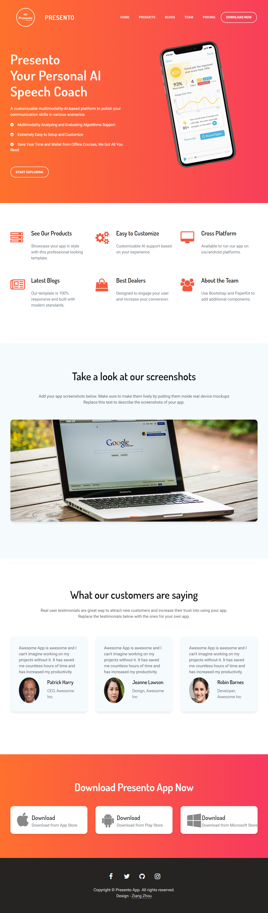
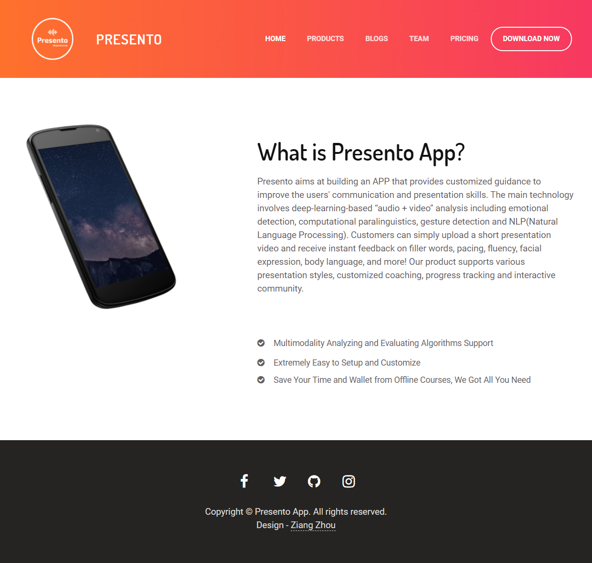
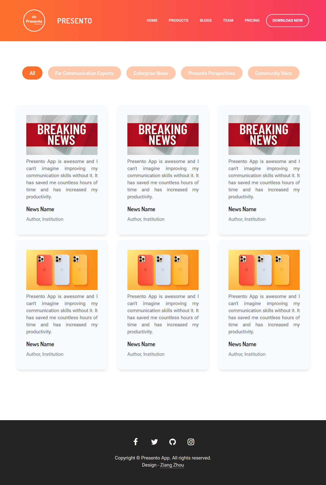
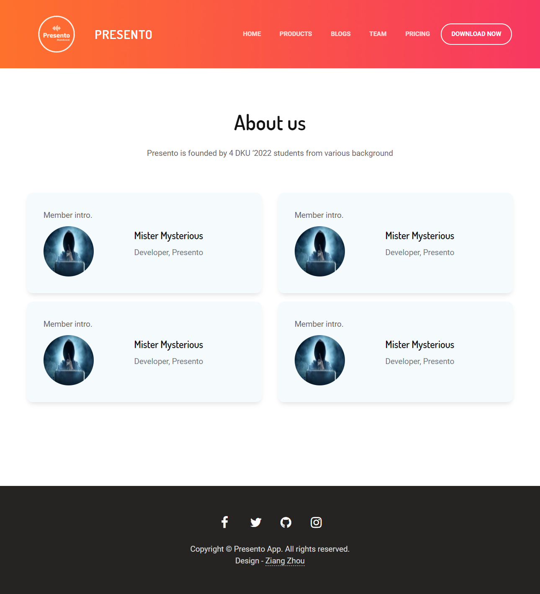
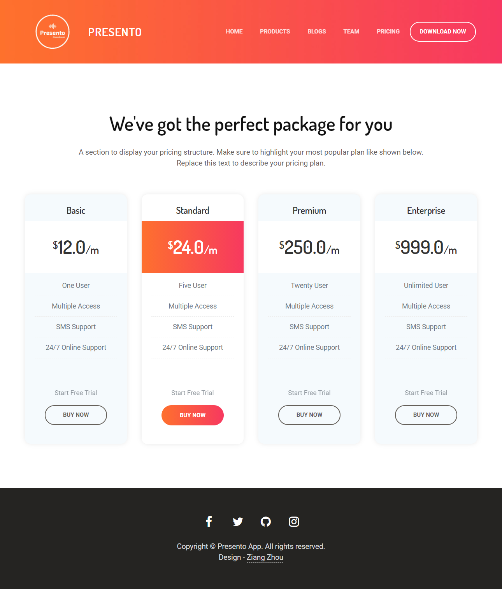

The Color I picked for presento is orange, red and their gradients. The reason for orange is that is a cool color, but also is the color we picked one year ago. Their combinations creates a warm and vigorous vibe.
#ffc8ac
#ffa577
#FE712C
In the previous feedback on assignment3, professor Symuleski mainly suggested two potential improvements. The first improvement is that the background of the landing page can be a way to communicate the purpose of our application to the users. The second improvement is that use demos/gifs to give users an instinctive insight on how Presento can help them, just like the way Grammarly did. The common thing of these two suggestions is that the landing page should be more communicative and instinctive to give users a clearer overview. While I agree with this idea, I have some iterated ideas regarding the background. After view many tech corps landing pages, I found that pure color or simply gradient color can make it appears Premium, while an inappropriate background image might ruin the tech vibe of your website. Thus I decided to keep the media advice, but iterate the background image with gradient colors.
Below is the screenshot of my landing page. As I mentioned in the major iteration, there are two iterations compared to my last design. The first is that the background is set to a gradient color. And the second is that I added a prototype screenshot of the Presento mobile app. For now, it is merely a screenshot. In the future, it can be replaced by a video demo if available.

Presento Landing Page
For now, the product page is quite simple. It mainly introduced what our product is for, and what functionality does our product has. New updates, if any, will be also be presented on this page in the future.

Presento - Product Page
As you can see, the blog page is mainly for study purpose. You can pick different topics on the top, and you will see relevent blogs below. Aside from that, latest news/updates of Presento and the industry will also be updated here.As you can see, the blog page is mainly for study purposes. You can pick different topics on the top, and you will see relevant blogs below. Aside from that, the latest news/updates of Presento and the industry will also be updated here.

Presento - Blogs Page
The team page is displayed with flex. When the screen gets smaller, you will only see one column of team member introductions.

Presento - Team Page
Different pricing standards are available on this page. There will be updates regarding special offers/bargains on this page if any.

Presento - Pricing Page